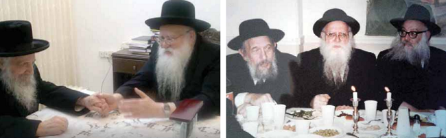

“עד לאותו רגע פניו הקדושות של הרבי היו ממש מאירות. לאחר שעניתי את הדברים האמורים
“עד לאותו רגע פניו הקדושות של הרבי היו ממש מאירות. לאחר שעניתי את הדברים האמורים, פתאום נהיו פניו הקדושות רציניות ועטו הבעה מאוימת מאוד. הרבי נעץ בי מבט חזק…” * תולדות חייו ופעליו של הגאון החסיד הרב מרדכי בלינוב ע”ה בעל ה”שלחן מרדכי” שכיהן כשליח במרוקו ולאחר מכן כמרא דאתרא בקהילת ליובאוויטש באובערוו
“עד לאותו רגע פניו הקדושות של הרבי היו ממש מאירות. לאחר שעניתי את הדברים האמורים, פתאום נהיו פניו הקדושות רציניות ועטו הבעה מאוימת מאוד. הרבי נעץ בי מבט חזק…” * תולדות חייו ופעליו של הגאון החסיד הרב מרדכי בלינוב ע”ה בעל ה”שלחן מרדכי” שכיהן כשליח במרוקו ולאחר מכן כמרא דאתרא בקהילת ליובאוויטש באובערוויליע צרפת וראב”ד ליובאוויטש צרפת

ואכן, הרב השתדל לסיים את הש”ס מדי שנה.
“הבחור הזה יגע כל ימי חייו בתורה ועבודה”
שנה חלפה מאז פטירתו של הגאון החסיד הרב מרדכי בלינוב ע”ה, מרא דאתרא דקהילת ליובאוויטש באובערוויליע צרפת ואב”ד הקהילה הק’ דליובאוויטש בצרפת.
הרב בלינוב נולד בעיירה קלימאוויטש שברוסיה לאביו הרב שמואל דוד ע”ה ולאמו, בת למשפחה של גאונים. כבר בילדותו ברחה משפחתו מרוסיה, ולאחר נדודים רבים הגיעה המשפחה לפריז בימים שלאחר חג הפסח תש״ז.
עול ימים היה באותם ימים, כבן תשע שנים בלבד, ועם זאת כבר היה בקי נפלא בחומש ורש״י, עד כדי כך שגדולים בחכמה ובשנים היו באים לשאול את היניק וחכים פשט ברש”י…
בבחרותו למד בישיבת ‘תומכי תמימים’ בברינואה, שם שאב רבות מבארם הנובע של המשפיעים הרה”ח רבי ניסן נעמנוב, והרה”ח הרב ישראל נח בליניצקי. המשפיעים רוו נחת מתלמידם זה ונהנו ממנו מאד. וכך כתב עליו באותם ימים הרב ישראל נח: “הבחור הזה יגע כל ימי חייו בתורה ועבודה, והוא מלא וגדוש בכל מקצועות התורה, וחוץ מזה יש לו כוח ההסברה, יש לו חיות בזה להעביר לתלמיד, ובכוחו לפעול…”
בהזדמנות גילה הרב בשיחה טפח מהתמדתו העצומה בבחרותו: “כשלמדו בישיבה מסכת בסדר נזיקין, הייתי לומד לבדי את כל ההלכות בשולחן–ערוך חושן משפט השייכות לאותה מסכת. זו הייתה יוזמה אישית שלי. מובן שלשם כך היה עלי להוסיף וללמוד שעות רבות מעבר לסדרי הלימוד בישיבה. מעבר לעשר שעות לימוד ביממה שנקבעו מטעם הישיבה, הוספתי ללמוד לפחות עוד חמש שעות. זה עלה לי בהרבה כוחות נפש ובריאות, אבל ב״ה הצלחתי לעמוד בזה״…
בחודש סיון תש”כ בא בקשרי השידוכין עם הרבנית שיינא רבקה תבלחט”א, בת הרה”ח רבי אלחנן (חנן) לווין ז”ל.
מלא וגדוש בכל מקצועות התורה
באותה תקופה כתב הרב בלינוב לרבי, כי הוא מוכן ומזומן לכל ‘שליחות’ שהרבי ישית עליו. באותם ימים הוצעה לו הצעת שליחות לשמש כראש ישיבה בעיר מרקש שבמרוקו, ישיבה שנוסדה על ידי שליחו של הרבי במרוקו הרב שלמה מטוסוב.
באותם ימים שהה הרב בלינוב ב’בית חיינו’, ואף זכה להיכנס ל’יחידות’ בקודש פנימה. במהלך היחידות אמר לו הרבי שכדאי שילמד את מקצוע השחיטה, משום שבתנאי הימים ההם במרוקו, כדאי שיידע לשחוט בעצמו. הרב בלינוב אכן ניצל תקופה זו ללמוד שחיטה אצל ידידו השו״ב הרה״ח ר׳ בערל יוניק ע״ה. בתוך פחות משבועיים כבר העמיד ׳חלף׳ לשחיטת עופות וגם לשחיטת גסות. הוא גם השלים את לימודי השחיטה שלו.
הדאגה של הרבי אליו, הייתה כדאגה של אב לבנו. כאשר מועד החתונה קרב ובא, התברר כי לחתן דנן אין די כסף עבור הטיסה חזרה מארה״ב לצרפת. הוא אמנם קיבל הלוואה בסך אלף פרנק, אך לא היה זה אלא שליש מעלות הכרטיס. במהלך ה׳יחידות׳ אמר לו הרבי שאת יתרת הסכום יוכל לקבל בהלוואה דרך המזכיר הרב חדקוב ע”ה. הרב בלינוב ביקש להשיג שני ערבים, אך הצליח למצוא רק ערב אחד, ר׳ בערל יוניק. ב׳יחידות׳ השנייה אליה זכה להיכנס לקראת שובו לצרפת, התעניין הרבי מה קורה עם ההלוואה, והרב בלינוב השיב כי טרם השיג שני ערבים. אמר לו הרבי בנימה אבהית: ׳אל תדאג, הרב חדקוב יסכים להלוות לך עם ערב אחד’. וכך היה.
במעמד זה הורה לו הרבי כי לאחר נישואיו יסע בשליחותו למרוקו, שם ימסור שיעורים בישיבה הגדולה של חב”ד בעיר מרקש. הרבי אף הורה לו לפעול שם במרץ ובחיות, ואיחל שהישיבה תתפתח באופן של ׳יציץ ופרח׳. בנוסף הציע הרבי, שהכלה תעבוד בתור מורה ב’בית רבקה׳ במרקש.
שליחות קצרה ומועילה במרוקו
מיד לאחר נישואיהם, בסוף חודש תשרי תשכ״א, נסע הזוג הצעיר למרוקו. הרב בלינוב התמנה כראש הישיבה והיה מוסר שיעור כללי בישיבה מדי יום חמישי אחרי הצהריים לפני כל בני הישיבה. שמע שיעוריו יצא בקרב תלמידי החכמים, ובין הבאים לשיעור היה הראב”ד הגה”צ רבי מכלוף אבוחצירא זצ”ל, שהיה מגיע לישיבה במיוחד כדי לשמוע את השיעור.
בתקופה הקצרה שבה שהה במרוקו, הצליח הרב בלינוב להרחיב את הישיבה ומספר תלמידיה הגיע בזמנו ל–500!
נראה כי קפץ רוגזו של השטן, שכן באותם ימים הודיעו לו השלטונות המקומיים כי הוא נחשד בפעילות ציונית בכך שהוא משכנע נערים לנסוע לארץ–ישראל. לאחר זמן קצר גורש ממרוקו.
עם שובו ממרוקו לצרפת בחודש אדר תשכ”א, החל לעסוק כשוחט. לקראת שנת תשכ”ג פתח הרב ב’פלעצל’ בית ספר לכ–30 ילדים, אותו ניהל בהצלחה רבה. מטרתו של בית הספר היה להציל ילדים יהודים מרדת שחת. כשחש שהוא מתקשה בגיוס משאבים להחזקת הת”ת, העביר את ניהול המוסד לגה”ח הרב הלל פעווזנער ז”ל. תלמוד תורה זה גדל והתפתח לימים לרשת מוסדות “סיני״ בהם התחנכו במשך השנים אלפי ילדים יהודים.
הצעות רבנות שנדחו על הסף
באותה תקופה קיבל כמה הצעות רבנות. אחת מהן הייתה כהונת אב”ד קהילות החרדים של פאריז, אולם הרב בלינוב סירב לקבלה למרות לחצים רבים שהופעלו עליו, באמרו שהתפקיד גדול מידי עבורו, בהיותו עדיין צעיר לימים.
זמן מה לאחר מכן, בשנת תשכ”ב, קיבל הצעה לכהן כרב הכולל ורב הראשי של העיר שטוקהולם שבשבדיה. הרב בלינוב אף נסע לשם כך לשטוקהולם ושבת שם, ואף ביקר בכל המוסדות. בסיום נקבע להיפגש ולהידבר עם ראשי הקהילה, כדי לקבוע את תנאי התפקיד. אנשי הקהילה אמרו שהם מרוצים ממנו, אך בפיהם היו שלושה תנאים: א. שיסדר את זקנו. ב. שיקצר את החליפה הארוכה. ג. כשבדק הרב את המקוואות, ראו שהוא מעיין היטב בכשרות המקווה והעיר הערות שונות, אבל הפריע להם שבמה שנוגע למקלחות ולאמבטיות לא עניין אותו ולא העיר מאומה. הם טענו ואמרו שבזמננו העיקר הוא האמבטיה, ואילו המקוה אינו נחוץ כל כך… בכללות הסבירו, שכך וכך צריך להיראות רבה של שטוקהולם…
הרב בלינוב סירב אפוא לקבל את רבנות שטוקהולם. אולם לאחר מכן היה מסופק שמא לא צדק בהחלטתו, והיה מודאג מכך, כי אדרבה, אולי במקום כזה צריך לקבל את התפקיד ולשנות את פני הדברים. הוא שטח את הדברים בפני הרבי, שהשיב לו שטוב עשה בסירובו, ורק אז נרגע.
הפנים של הרבי ב’יחידות’ השתנו בבת אחת
בהיותו אברך צעיר לימים, אירע בצרפת סכסוך בין שתי מוסדות. הצדדים פנו לרבי בעניין זה, שהפנה אותם להתדיין אצל הרב בלינוב, באומרו כי פסקיו הם פסק הלכה גמור.
מאותה עת החל לשמש כדיין ומורה צדק, עד שלימים נתקבל כאבד״ק אובערוויליא בצרפת. לימים סיפר: ״ביחידות לה זכיתי להיכנס בסביבות י”ב תמוז תש”מ, יחידות שנשאה אופי יוצא מגדר הרגיל, זכיתי להוראה מפורשת מהרבי. בדרך כלל, כל ׳יחידות׳ שלי אצל הרבי ארכה בין ארבעים לחמישים דקות. ה׳יחידות׳ האמורה, התקיימה בתקופה שכבר בקושי נכנסו ל׳יחידות׳ פרטית, והיא ארכה 18 דקות.
“הגעתי אז לרבי עם בני ר׳ מנחם־מענדל (כיום רב ושליח בעיר ס׳ דניס, צרפת) לקראת הבר–מצוה שלו. לפתע קרא לי המזכיר הרב גרונר, ואמר לי שהרבי ביקש שאכנס ל׳יחידות׳ אחרי מנחה. באותה ׳יחידות׳ הרבי תבע ממני חזק מאוד שאקבל את משרת הרבנות בקונסיסטואר של פאריס [הקהילה היהודית הרשמית], ודרש שהמשרה תתבטא בכל התחומים - לא רק בתחום הכשרות”.
“אמנם כבר היה רב ספרדי שהתמנה בשנת תשכ״ג, לאחר שהגיעו לפאריס המוני פליטים ממרוקו, אך ראשי הקהילה ביקשו אז למנות גם רב אשכנזי, והרבי ביקש שאציג את מועמדותי לתפקיד. אמרתי לרבי שאינני סבור שאני ראוי לתפקיד זה, משום שאל הקונסיסטואר מגיעות שאלות רבות וקשות, ובפרט בענייני יוחסין, שאלות שאינני ראוי לענות על כולן. הוספתי ואמרתי לרבי שמיד לאחר שאצא מה׳יחידות׳ אשתדל למצוא מישהו שמתאים לתפקיד לזה ולהשפיע עליו שיקבל את התפקיד.
“עד לאותו רגע פניו הקדושות של הרבי היו ממש מאירות. לאחר שעניתי את הדברים האמורים, פתאום נהיו פניו הקדושות רציניות ועטו הבעה מאוימת מאוד. הרבי נעץ בי מבט חזק מאוד ואמר לי: ‘האם ברצונכם אפוא לבחור מישהו שבאמת איננו יודע לענות על שאלות כאלה?!’ ובנוגע לשאלות של יוחסין, המשיך הרבי ואמר לי: ‘אני יודע שספרים יש לכם, וכשתגיע שאלה קשה, הרי מוכרחים לתת לכם לפחות יממה אחת כדי לברר את שם הבעל, שם האישה, שמות העדים, וכל הפרטים הקשורים לזה. ובמשך אותה יממה תוכלו לברר גם שאלה קשה!’
“למעשה, באותו שלב לא התממשה ההצעה. התקיימה בנוכחותי אסיפה של ראשי הקהילה שעמדו בראש הקונסיסטואר. כמה מהם אכן תמכו בי וטענו שנחוץ בפאריס רב אשכנזי, אך היו אחרים שטענו שמאחר שרוב הקהילה היא ספרדית, די ברב ספרדי. למעשה התקבלה דעתם של האחרונים, ומועמדותי לא התקבלה”.
״כשהייתי אצל הרבי כעבור שלוש שנים, שאל אותי הרבי מה קורה בנוגע לרבנות בקונסיסטואר. עניתי לרבי שעשיתי ככל שביכולתי, אך לא אסתייעא מילתא. ציינתי גם שאחד הרבנים בפאריס אמר לי שההצעה נפלה משום שלא התייחסתי בצורה יפה לראשי הקונסיסטואר במהלך אותה אסיפה. הרבי התעניין במה דברים אמורים, ואמרתי שלדעתו של אותו רב, כשדובר על נושא מערכת הכשרות, לא הייתי צריך לומר שמצבה של מערכת הכשרות אינו בסדר, אלא היה עלי לומר שברצוני לשפר את מערכת הכשרות, ואז הייתי מתקבל לתפקיד. כששמע זאת הרבי, הגיב מיד: ׳בוודאי שאמרת טוב! הרי כתוב ׳וזה לכם הטמא׳, זאת אומרת שצריכים להורות באצבע ולומר מה כשר ומה לא כשר׳. באותו רגע הייתי מרוצה מכך שלפחות כיוונתי בעניין זה לרצונו של הרבי”.
רבנות ליובאוויטש בצרפת
בשנת תשמ״ח יסד הרב בלינוב את ועד רבני ליובאוויטש בצרפת, כשהוא ממנה את הגה״ח רבי הלל פעווזנער לאב״ד, ואת עצמו מינה לסגן. עם פטירת רבי הלל בצום גדליה תשס״ט, מונה לאב״ד.
בתפקיד הרבנות מסר הרב בלינוב את נפשו להרבות תורה והוראה בישראל, כשהוא משמש בצרפת תל תלפיות, וככתובת מפורסמת לכל פונה. בשפה ברורה ובנעימה היה משיב את דעת תורתנו הקדושה להמוני שואלים, דבר יום ביומו.
מים התשובות שהרב השיב להמוני שואליו מבקשי הכרעתו ההלכתית, על פני עשרות בשנים, הופיע לימים השו”ת “אגרות מרדכי”, שהינו אוצר של תשובות הנוגעים למעשה לאנשים פרטיים, לרבנים ולמנהיגי קהילות קדושות, באירופה בכלל ובצרפת בפרט.
מלבד התשובות המנומקות, השיב גם לרבנים מפורסמים גדולי תורה והוראה, שהיו שואלים ומבקשים ממנו מראי מקומות לסוגיות הלכתיות, טרם עידן המחשב והספרות הדיגטלית. הרב ז”ל בגאונותו המופלאה היה אז בבחינת ‘מחשב חי’… בדרך כלל היה משיב מיד במספר שורות של מראי מקומות.
על הסייעתא דשמיא המיוחדת שליוותה אותו בפסקיו ובכוח הרבנות שלו, סיפר האדמו”ר משאץ שליט”א, שעמד בקשרי ידידות עם הרב בלינוב.
לפני שנים אירע סיפור מצער מאד, מקרה משפחתי מסוים בקהילה היהודית בצרפת. הדין ודברים התגלגל לפתחו של הרב, ולאחר בירור עמוק לשורשו, הגיע הרב למסקנה שפלוני ופלונית אסורים להינשא. לאחר שהצדדים הלכו לביתם, נותר הרב עם חשש, שמא בשנים הבאות יגיע מצב שהם ירצו להינשא. חשב הרב לעצמו שהרי הוא אינו צעיר, ואם הם ירצו להינשא בעוד שנים - מי יעכבם?! הרי הדבר לא היה מפורסם, וללכת ולפרסם בבתי דינים לא רצה, כדי שלא לביישם, מה גם שהם אמרו אז שאין דעתם להינשא, ולשם מה יש לביישם ללא סיבה.
על כן, מתוך אחריות גדולה לקהילה בצרפת, ומתוך ראיה למרחוק, פגש את אחד מרבני הקהילה, והרב בלינוב נתן בידו פתק סגור, ואמר לו: ‘אם יבוא יום שייצא קול כי פלוני ופלונית מבקשים להינשא, אזי תפתחו את הפתק’.
זמן קצר לפני פטירתו של הרב בלינוב, הגיעה שמועה כזו לידי אותו רב. הוא פתח את הפתק, ומצא בו בכתב ידו של הרב כי הוא מעיד שהשניים פסולים להינשא זה לזה.
סיפור זה מלמד על פקחותו לצד רגישותו לזולת, גם כלפי אנשים שהנהגתם לא הייתה ראויה. הרב בחכמתו חשב וחשש מה שיהיה בשנים הבאות, לצד גודל אחריותו למה שיקרה בקהילה בעתיד.
לא בכדי זכה הרב בלינוב להערצה מופלאה בקרב יהודי צרפת ובקרב חוגי הרבנים. כשביקר בצרפת ה’ראשון לציון’ הרב מרדכי אליהו ז”ל, שוחח רבות עם הרב ז”ל בדברי תורה ובענייני רבנות, ומאז העריץ מאוד את הרב. לימים נודע כי בביקורו של הראשל”צ אצל הרבי, נסבה השיחה גם על היכרותו של הגר”מ את הרב בלינוב. בשיחה שהתקיימה כעבור שנים בין בנו, הרב יוסף יצחק בלינוב, אב”ד בית ההוראה המרכזי בבני ברק, אצל הגר”מ אליהו, ביקש מהראשל”צ שיספר לו מה דיבר עמו הרבי בנוגע לאביו. הגר”מ נענה שהוא אינו יכול לומר, אולם הסכים לומר דבר אחד ממה שאמר הרבי: “כשהרב בלינוב פוסק פסק, יש לסמוך על הפסק בעיניים עצומות!”…
מהפך במערך הכשרות המהודרת בצרפת
בשנים הראשונות לאחר נישואיו, עסק הרב בלינוב לפרנסתו כשו”ב בפאריז. בשנת תשכ״ד שהה המשפיע הרה”ח הרב ניסן נעמנוב אצל הרבי, וכששב, סיפר שביחידות אמר לו הרבי: ״יש בפאריז אברך שיכול להיות רב או ראש ישיבה, מדוע עליו להשקיע את כוחותיו לשחוט כמה תרנגולות?! אם בשביל הברכות שמברכים על השחיטה? הרי אפשר לברך עוד כמה ברכות!”…
בעקבות זאת הפסיק הרב בלינוב לעסוק בשחיטה. בתחילה התקבל כבוחן בישיבת ברינואה, אולם מספר חודשים לאחר מכן מונה כראש מערכת כשרות השחיטה בפאריז.
הרב בלינוב, כדרכו, לא הסתפק בקיים, ובמשך השנים חולל מהפך אדירה במערכת השחיטה בצרפת. עד שהחל לכהן בתפקיד, התנהלה מערכת הכשרות הכללית רק בידי ה”קונסיסטואר” - הרבנות הראשית של צרפת, תחת החותמת ‘בית דין צדק דפריז’. הרב בלינוב לחם שלא רק ציבור שומרי המצוות יוכל להשיג את כל המצרכים הנחוצים בכשרות מהודרת, אלא שכל יהודי בצרפת שיחפוץ בכך, תהיה לו אפשרות לאכול ‘כשר’ במלוא משמעות המושג. מטרה זו היתה נר לרגליו בעבודתו במערכת הכשרות.
הרב בלינוב ביטל את הבלעדיות שהיתה ביד ה”קונסיסטואר”, וגרם שיקומו מערכות כשרות מהודרות נוספות, עד שכיום ניתן להשיג בחנויות הגדולות בצרפת, מוצרים העומדים תחת כשרות מהודרת. בד בבד זכה לבצע שינוי גדול לטובה במערכות השחיטה של העופות והבשר שתחת כשרות ה”קונסיסטואר”, בבחינת “פנים חדשות באו לכאן”.
ביגיעה ובהתמסרות עצומה השקיע הרב בלינוב כוחות רבים למען העמדת הכשרות על תילה.
בכל תיקון ושיפור שביקש לבצע השקיע שיחות רבות, כדי להסביר ולהשפיע על כל הנוגעים בדבר. כמעט תמיד היה נוסע בעצמו לפקח ולבדוק על מערכות השחיטה, ובשל כך נעדר מביתו לילות רבים, שכן השחיטה היתה בדרך כלל בשעת בוקר מוקדמת. לפעמים רבות השכים לצאת מהבית כבר בשעה 3–4 לפנות בוקר ולפעמים היה ישן במקום מבעוד לילה. כך היה נוהג גם בשנים שבהן היו בביתו ילדים קטנים, בעוד רעייתו תבלחט”א הרבנית עומדת לימינו לסייעו.
כשרצה להוזיל את מחירי הבשר, כדי שיד כולם תהא משגת לקנות את הבשר המהודר, יזם שחיטה מחוץ לגבולות צרפת, בפולין או בדרום אמריקה. הוא עצמו עמד ושכנע את סוחרי הבשר לבצע שחיטה בחו”ל. כדי לשכנע אותם, היה עליו לעשות מעשה–סוחר, לבדוק תחילה את כל המחירים, ואת שאר הפרטים ופרטי הפרטים, כמה יעלה קילו בשר כזה וכזה, וכמה ירוויח הסוחר כשימכור את הבשר לחנויות. כמו כן היה עליו לברר כמה יהא צריך לשלם לשוחטים, ולמשגיחים, וכמה יעלו מחירי הטיסות. רק כשהגיע לחשבון הכולל והסיק שמבחינה מסחרית כדאית השחיטה הזאת, ניסה לשכנע את הסוחרים הגדולים שייכנסו לעסק, כי הדבר ישתלם להם מנקודת מבטם, דהיינו מבחינה רווחית.
לאחר מכן החל הרב לתור ולחפש אחר שוחטים ובודקים חסידיים, יראי שמים, והיות שהשובי”ם שבמדינת צרפת היו עסוקים בעבודתם במקום, היה צריך לייבא שובי”ם מארה”ק ומארה”ב. הדבר היה כרוך בשעות רבות של חיפוש ובירור אחר כל הצעה והצעה.
בכל פעם שהיה שב מנסיעות השחיטה המרוחקות, אחרי שבס”ד הצליח לדאוג לכמות מספיקה של בשר כשר וחלק, היה שרוי בשמחה על שהצליח לעשות נחת רוח להקב”ה. מאידך גיסא, בפעמים בהן לא הצליח לארגן את השחיטה, היה לו מכך צער גדול.
עיסוקו זה בניהול מערכת הכשרות, ראה הרב בלינוב כשליחות שלו מהרבי, שהורה לו להתעסק בהעמדת הכשרות על תילה. כל מי שראהו בעבודתו, חש את כוח המשלח בשליח, והדבר הקרין על כל הסובבים.
גומל חסד בגופו ובממונו
בחנוכה תשמ”ח נסע יהודי מקהילת חב”ד בצרפת עם כל משפחתו אל הרבי כדי לשהות בצלו בימי האור. בהיותו שם, קיבל הודעה שאביו נפטר בצרפת. הלה סידר לעצמו כרטיס וטס בחזרה לצרפת בעוד משפחתו נותרה בניו–יורק, שכן היה יקר לשנות את הכרטיסים.
ההלוויה התקיימה בעיר פונטן, והבן דאג מאד מה יהיה עם מנין בהלוויה, מכיון שכל משפחתו לא שמרו תומ”צ. מיד בהגיעו להלוויה הבחין ברב בלינוב שאף הוא הגיע למקום, כשהוא מביא עמו את ר’ מנדל דייטש ע”ה, וביחד עימם היה מנין. למחרת סודר מנין לתפילה בבית האבל, כאשר הרב בלינוב הגיע למקום בין הראשונים. לתדהמת האבל, הרב הוציא מאמתחתו שקית מלאה בשר והכניס מיד למקרר, בהסבירו לאבל שכעת אסור לו לצאת לקנות אוכל, ואילו משפחתו שוהה אצל הרבי, כך שאין מי שיקנה לו. לכן דאג שיהיה לו עופות כדי שיהא לו מה לאכול. כמו כן הזמינו לבוא לאכול בביתו בשבת.
אותו יהודי היה מופתע כל כך מכל ההתנהלות של הרב, הן בהלוויה והן בימי ה’שבעה’, כשהכל נעשה ללא כל בקשה מצדו, אלא מרגישותו של הרב.
במהלך ימי ה’שבעה’ סיפר אחד המנחמים שעבד כטבח בישיבה בברינואה, על תקופה שבה המצב הכלכלי בישיבה היה קשה מאד, עד כדי כך שהמנקה הפורטוגזית רצתה להפסיק לעבוד, בשל החוב הרב שהצטבר. גם הספקים לא הסכימו להמשיך לספק עוד סחורה, כיוון שהצטברו חובות.
בעת ההיא הציעו לאותו יהודי להיות הטבח ולנהל את המטבח בישיבה, אלא שהוא סירב עקב המצב הכלכלי.
באחד הימים קיבל טלפון מהרב בלינוב שביקשו שיטול על עצמו את התפקיד, כאשר הרב הבטיח לו שהוא נוטל על עצמו את האחריות לסידור משכורתו מדי חודש. כמו כן סידר הרב את ענין התשלום עם המנקה, ואמר שמעתה יוסיף על משכורתה עד להשלמת החוב. גם בקשר לספקים אמר שישלם מיד לכל ספק שיביא סחורה. אלא שהרב התנה תנאי עם הטבח, שלא יספר לאף אחד מהיכן הוא מקבל כסף!
ואכן הטבח שמר על כך בסוד במשך כל השנים, וסיפר זאת רק לאחר פטירת הרב ז”ל.
ההתקשרות אל הרבי
הרב בלינוב היה מקושר בכל ליבו ונפשו לרבי בהתקשרות אמיתית ופנימית, ובהתבטלות נפלאה. הנהגתו היתה בבחינת “מסור לרבי בכל מה שיאמר לו” - כפי שהעיד עליו כבר בבחרותו רבי ישראל נח בליניצקי. זה היה הבריח התיכון כל ימיו.
כך בענין התמסרותו למלחמת המצוה למען העמדת מערכת הכשרות בפריז, וכך בענין לימוד ה”חסידישע פרשה” שלא ויתר על לימודה מדי שבוע בשבוע. הרב בלינוב סיפר פעם לאחד מנכדיו, שקיבל הוראה מהרבי לסיים בכל שנה את ה’ליקוטי תורה’ וה’תורה אור’. ואמנם במשך שנים ראהו יושב והוגה בקביעות בספרים אלו. גם כשנסע בקיץ לפוש, נטל עימו את ה”תורה אור” או את ה”לקוטי תורה”. יש ולקח אתו דפים בודדים, או קונטרס מתוך הספרים, שמצא בבית הכנסת.
חיות מיוחדת היתה לו בקיום ה’מבצעים’ של הרבי. בכל פעם שנסע במונית בצרפת, והנהג היה יהודי, מיד פתח עימו בשיחה על שמירת תורה ומצוות, ועל הנחת תפילין בכל יום. גם בשהותו בארה”ק היה מדבר ומשכנע כל נהג בענין זה. בצרפת אף רכש זוגות תפילין ונתנם לאברכים המקיימים ‘מבצע תפילין’ מידי יום ראשון, כדי שיהא לו חלק בדבר. כך גם ביתר ה’מבצעים’ של הרבי.
הרב בלינוב אף ציין ענין זה בצוואתו, בה ביקש שמיד לאחר צאת נשמתו ימסרו לרבי, ובתוך הדברים כתב “והשתדלתי לקיים הוראותיו הק’ כל הזמן”!
פעם בהיותו ביחידות אצל הרבי, שפך הרב את ליבו בכאב על כך שאין ביכולתו לבוא אל הרבי בימים הנוראים, מפני שעליו לפקח על השחיטה העניפה בימים אלה. הרבי הוסיף ואמר, כי הוא מבין שגם בסוכות אין ביכולתו להגיע, מפני השאלות בעניני סוכה וד’ מינים. והרבי הפטיר: “ומה בכך? הרי ניתן להגיע לי”ט כסלו, הרי הם ימים גדולים וכלליים, וזה כמו שמגיעים לימים נוראים!”
מאז השתדל הרב להגיע אל הרבי לקראת י”ט וכ’ כסלו.
• • •
באחרית ימיו עלה הרב ז”ל ארצה, וארץ ישראל נקנתה לו בייסורין - בתקופה האחרונה היה חולה ומאושפז, עד שיצאה נשמתו ביום י”ד בטבת תשע״ז, בשנתו ה–ע”ט. מנוחתו כבוד בהר הזיתים בירושלים.
מפרי עטו הופיע ויצא לאור שו״ת ״אגרות מרדכי״ וספר ״שולחן מרדכי” חלק א’ - עיונים בשולחן ערוך הרב בעל התניא בהלכות פסח, אשר נערך בידי בנו הגה”ח הרב יוסף יצחק בלינוב שליט״א, רבה של מרכז בני ברק.c
רצון יראיו יעשה’
בשנת תשכ”ו חלה הרב בלינוב ונחלש מאוד, עד כדי כך שבכל כמה ימים הגיע כמעט למצב של עילפון.
הרופאים בדקו היטב, עד שמצאו שמדובר בסך הכל באולקוס, אלא שהדבר היה מוסתר. הם ביקשו לתת תחילה עירוי של כמה מנות דם, אך הרב התנגד בתוקף, כיון שהדם מקורו מנכרי. הרב אמר להם שיעשה הכל על מנת להתאושש אט אט ללא קבלת מנות דם, אלא שדעת הרופאים לא היתה נוחה מכך.
הרופאים הביאו אליו את הגה”ח הרב הלל פעווזנר ז”ל, שבמאמץ רב הצליח לשכנע את הרב שעליו לקבל את מנות הדם.
כשכבר הסכים, קרה דבר פלא. לאחר העירוי, הבחינו לפתע שידו של הרב התנפחה והאדימה. התגלה שהעירוי הוכנס בטעות שלא במקום הנכון, כך שהדם נותר מתחת לעור ולא נכנס לגוף. הדבר היה תמוה ויוצא דופן, שכן מדי יום נותנים בבית הרפואה עירויים רבים, ומעולם לא אירעה טעות כזאת.
“רצון יראיו יעשה”!
עדות שמיימית
עובדה מופלאה אירעה כששהה הרב בלינוב אצל הרבי בחג השבועות תשכ”ג. הרב נכנס ליחידות, וביקש ברכה להדרכה בקשר לרבנית תליט”א, שהיתה אז לפני לידה, והיה עליה לעבור עקירת שן בהרדמה מלאה. הרופאים חששו מכך, כי הכאבים בעקירה היו קשים.
תשובת הרבי היתה שיעקרו ואין לחשוש, כי הכל יתנהל כשורה.
הרב בלינוב שלח אז את תשובת הרבי מיד, במכתב לביתו.
כשנכנס הרב בלינוב ליחידות בפעם השניה טרם חזרתו לצרפת, שאלו הרבי מה שלום זוגתו בנוגע לעקירת השן, והרב השיב שאינו יודע, כי בימים ההם קשה היה להשיג קשר טלפוני לארץ אחרת. התפלא הרבי, ואחר כך הוסיף לאמר: “נו, יכולני לבשר לך שהעקירה כבר בוצעה והכל כשורה!”
כששב הרב לביתו, בירר אם מישהו דיווח לרבי בענין, והתברר שלא.
ויהי לפלא.